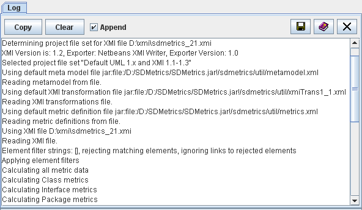

you can save the current
log entries to a ".txt" or ".log" file.
you can save the current
log entries to a ".txt" or ".log" file.
| Prev - Next - Down | SDMetrics - the UML design measurement tool |

Figure 22: The 'Catalog' View
The log shows which project files have been selected by SDMetrics for processing and why, as well as the calculations that have been performed. You can use the output of the log to document calculation runs performed via the GUI.
The copy button copies the current contents of the log view to the clipboard. The clear buttons deletes all log entries from the view.
When the "Append" checkbox is selected, the log entries of subsequent calculation runs will be appended to the log. When the "Append" radio button is deselected, the log will be cleared automatically before each new calculation run.
Via the save button you can save the current
log entries to a ".txt" or ".log" file.
| Prev | Up | Next |
| Section 4.13 "The View 'Catalog'" | Contents | Section 4.15 "Exporting Data" |